The Lunar New Year is a romance unique to the Chinese people.
Before we know it, the Year of the Snake is almost here.
Worth noting, this year we mark our first "intangible cultural heritage" Spring Festival.
Young people, who now set the tone for the Spring Festival, have already reimagined the old customs in clever new ways.
The "New Year pictures" that go with the holiday have taken on a new look under the brush of young artists.
Today we bring some early festive cheer.
The "Chinese-style snake" that broke 10,000 likes
Snakes are not cute in real life.
But in the hands of these artists, the little snake is the cutest thing.
@Heisen
The artist @Heisen uses digital tablet painting to draw snake babies in many poses.
On a base of traditional colors, the snake blends cultural elements such as the God of Wealth and Peking Opera.
The bold, free colors make people feel the energy of the New Year the moment they see the work.
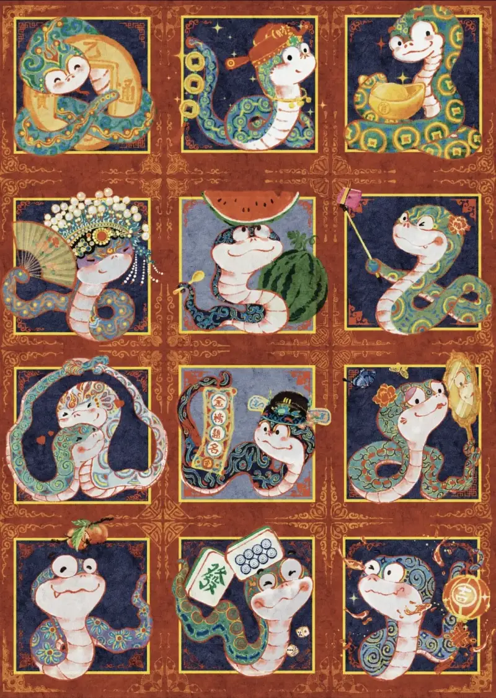
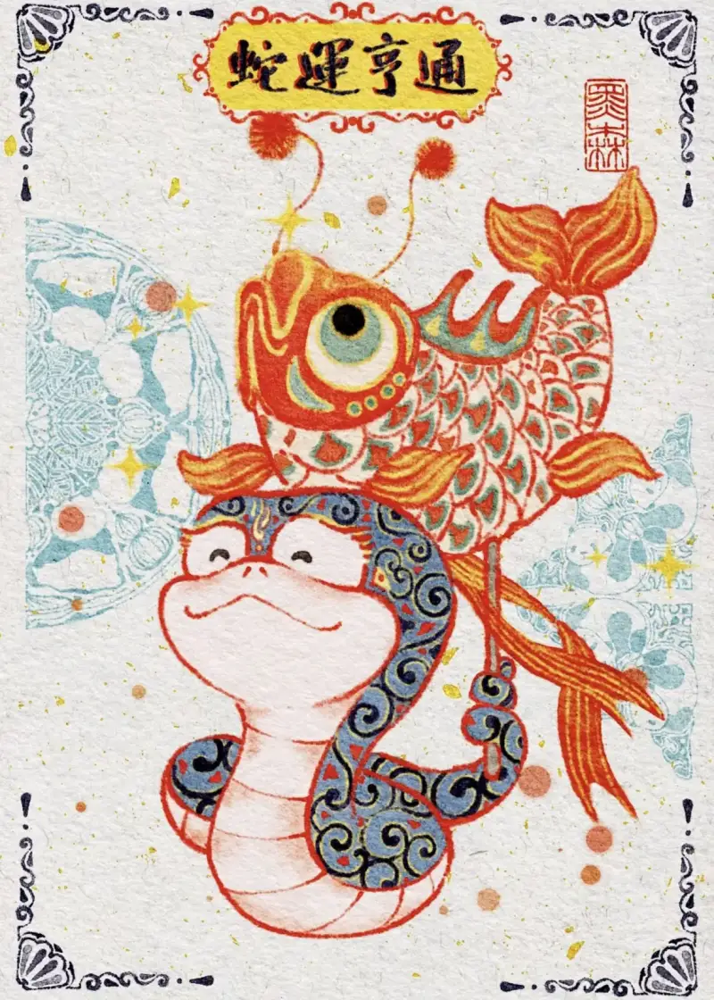
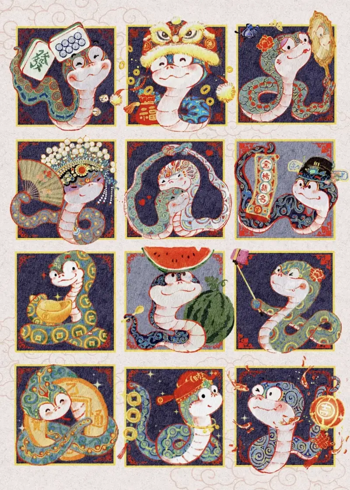
@Quangao
The artist @Quangao blends the snake with classical Chinese style in watercolor.
The round-headed little snake wears golden armor in red and green, full of festive joy.
He also boldly uses rouge pink, which gives the proud snake a touch of charm.
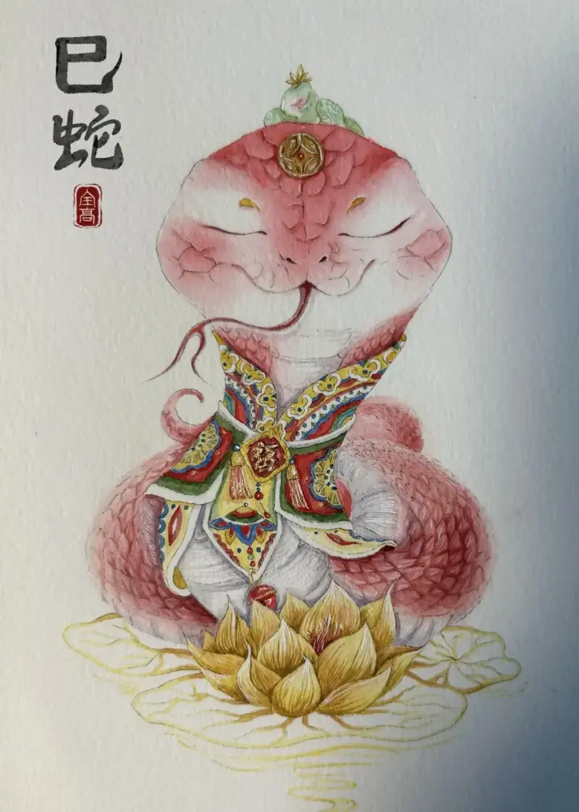
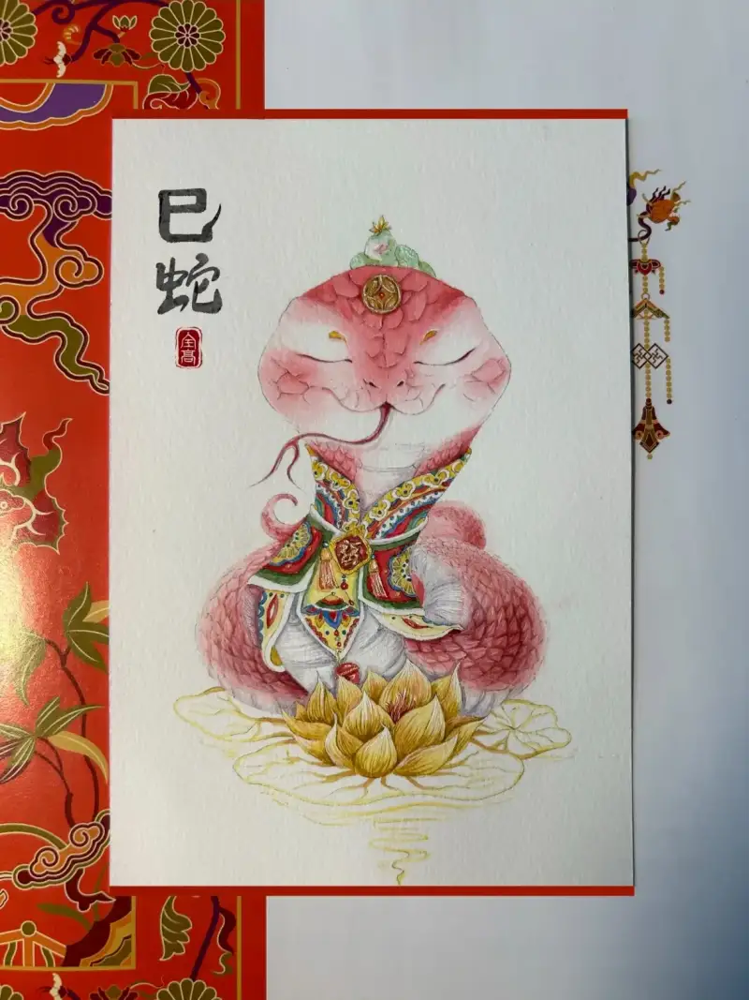
@TumiTeaMe
The snake has a spirit. Since ancient times it has stood for good fortune, wisdom, and the power of life.
The artist @TumiTeaMe sets a giant snake against a young girl for a sharp contrast. The image is ethereal and striking, and it carries the feeling that the snake brings new hope to people.
The canvas is large, but full of detail. One look, and you are struck.
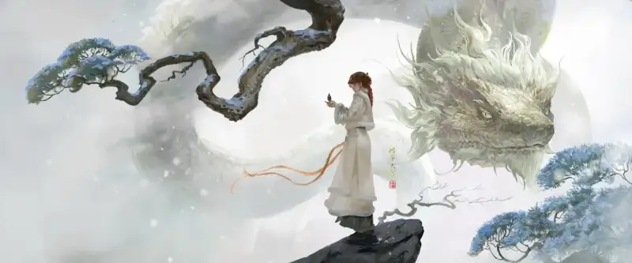
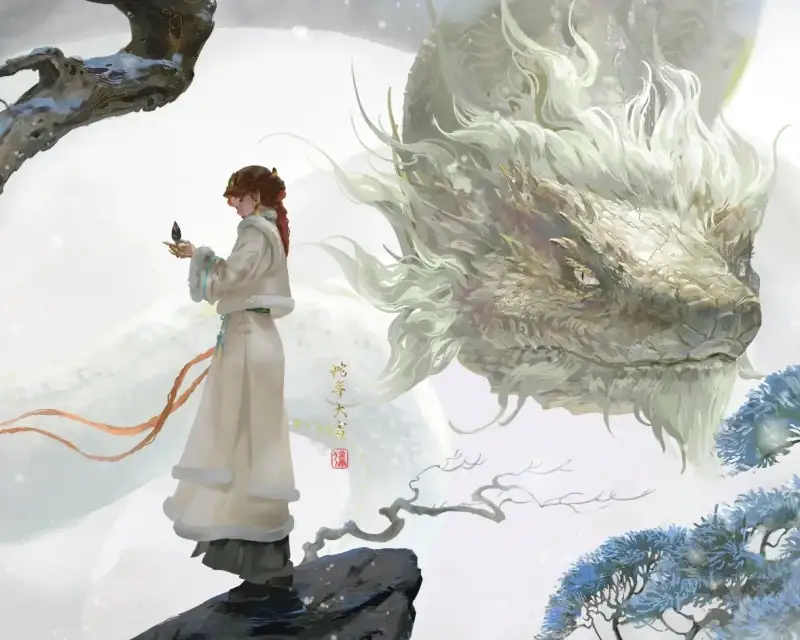
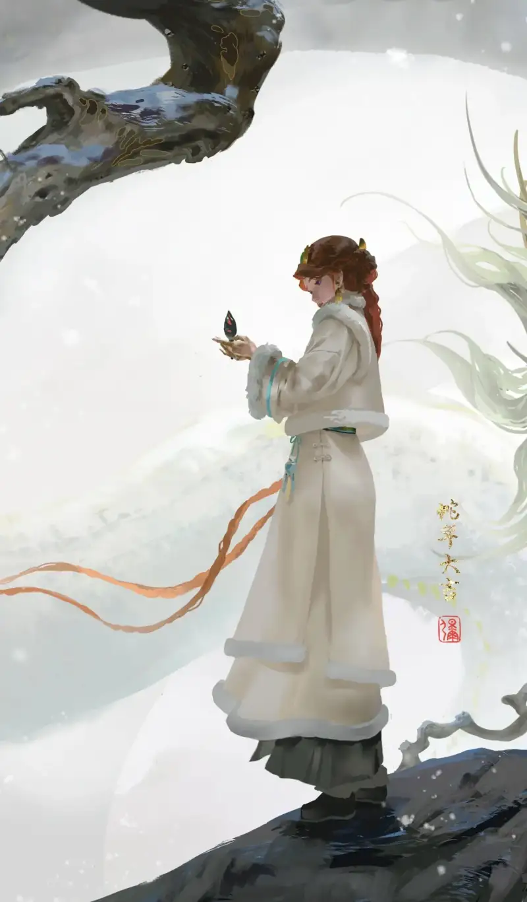
What has the Chinese market done to support original work?
There are too many stunning works to show them all.
But after seeing these, you may feel the same: in a time of growing sameness, it is good that so many artists stick to original work.
So many platforms in China now look for quality content, so that art that truly touches people and has real value can rise to the top.
On November 26, 2024, the 2024 Lehua Lock Screen Content Awards, hosted by OPPO Lehua Lock Screen, opened.
It follows a "quality first" principle, and invites creators to show their take on the world through painting, photography, and graphic design.
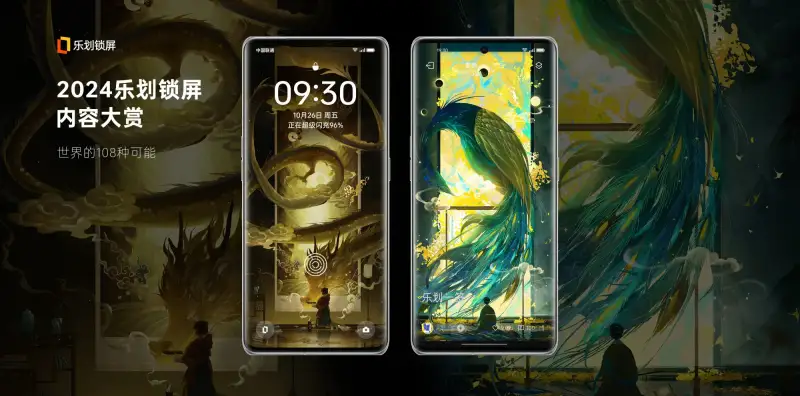
Lehua Lock Screen is a unique and new platform for both users and creators.
For creators, the lock screen takes up more space, and high-resolution images fit the phone well.
The image-set mode also makes the work more complete, which leaves more room for creative ideas.
For users, when they open their phone, they see quality works pushed automatically by the system based on their interests.
All works appear as image sets. Swipe the screen, and you read the full story of the work. This deepens the user's sense of the original, quality content on the lock screen.
Each set on the platform goes through strict selection. It is not only a pursuit of visual pleasure, but also a deep echo of the user's feelings and personality.
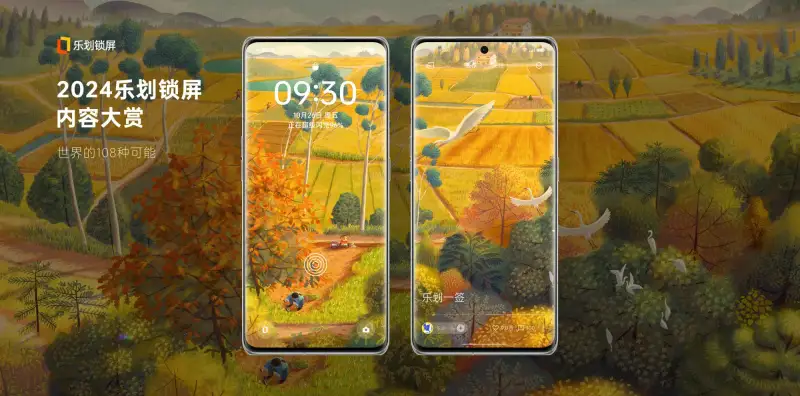
At the same time, the platform opens a fast review lane for creators.
It also pushes content by its tone, to raise the overall screen-on rate for creators.
If a work is high-demand original content that fits the platform's algorithm for priority, it gets high traffic on the platform.
Lehua Lock Screen holds that a good work deserves good traffic.
Since the awards started, the numbers show encouraging results.
The 2024 Lehua Lock Screen Content Awards drew 20,000 sets of works across the web, with more than 10,000 people taking part.
The quality content that emerged is dazzling, and users can share an "art exchange" with the creators through the screen.
Lehua Lock Screen wants to use this form to remind people that art is not high above us. It is everywhere.
The creators behind it need to be seen, and even more, they need to be recognized.
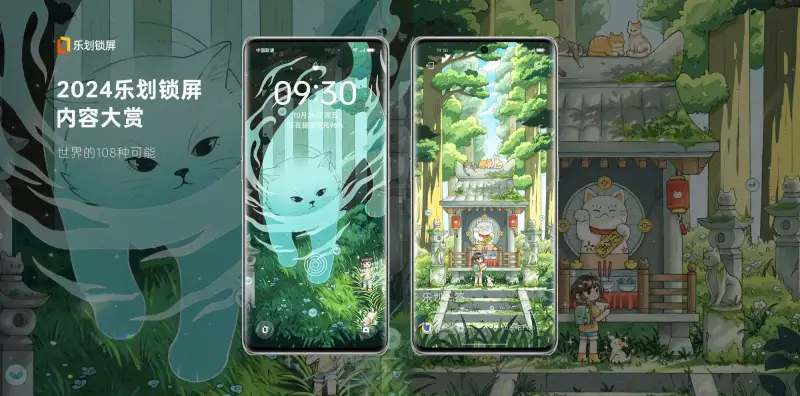
As it brings good content to light, Lehua Lock Screen also explores how to raise creator earnings.
Only when creators gain real earnings can their passion grow. It also keeps the whole ecosystem healthy, so creators and developers share a wider space to grow.
The annual Lehua Lock Screen Illustration Awards give winners rich prizes. They also get high exposure and returns backed by startup traffic at the tens of millions level.
As a well-run content community, Lehua Lock Screen uses its large user base and precise traffic algorithm. Through the deep mix of technology and content, it opens new paths to value growth for creators.
The platform has over 210 million monthly active users in China, and over 6.5 billion exposures a month.
24% of screen owners reached 100,000 followers, 10% get over 100 million exposures a month, and many top screen owners earn a million a year.
In an age when everyone wants visual pleasure, products born of good taste easily draw discussion and praise.
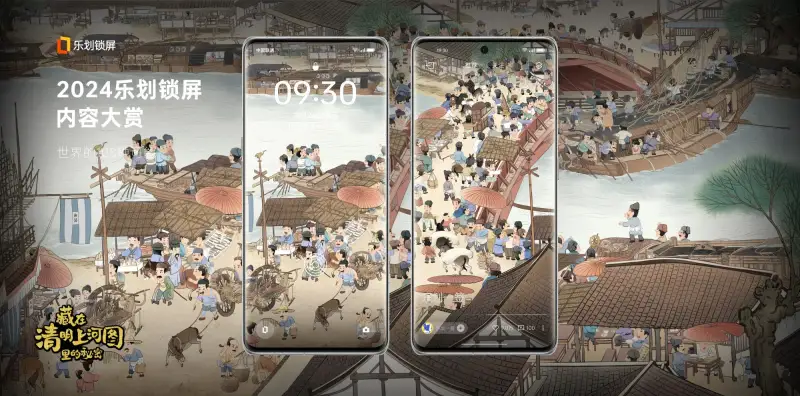
As technology develops, the lock screen no longer gives users a single static image.
People can visit exhibitions and watch videos on Lehua Lock Screen, for a full visual and audio experience. This also gives developers and creators more room to work.
This year's Lehua Lock Screen Content Awards take on four themes: the times, people, landscape, and imagination. They set four tracks:
a time-travel track, a wonder landscape track, a story-experience track, and an otherworldly imagination track.
The moment a user opens the phone, they see the creators' shining ideas.
Technology keeps changing, and new forms of work appear every day.
But Lehua Lock Screen holds that both users and creators must be treated with sincerity.
Inspiration is like the vine of art, and thought is like its foundation. The original, quality content built on them deserves the best traffic to promote it.
Lehua Lock Screen keeps working so that every creator has a dream to chase and a sail to raise.